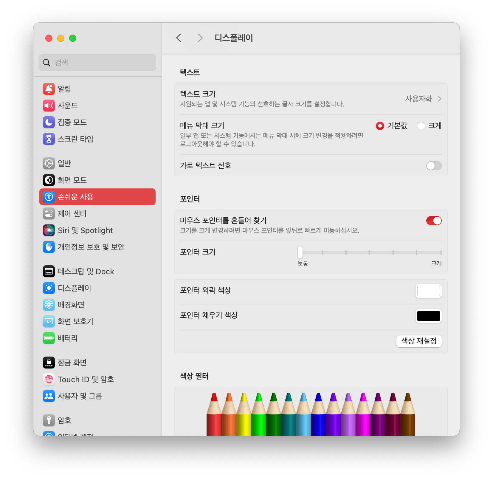

macOS 사파리에서 전체화면 영상이 깜빡이는 증상 고치기
macOS 사파리에서 유튜브나 넷플릭스를 전체화면으로 볼 때 화면이 깜빡이는 증상을 고쳐보자. 참고로 macOS 14 Sonoma에서도 해당되는 것을 확인했다.
증상 설명
꽤 오래 전부터 macOS의 사파리에서 전체화면으로 영상을 틀 경우 깜빡임 증상이 나타났다. 유튜브와 넷플릭스 두 군데에서만 확인했지만 사실상 모든 영상 소스에서 증상이 발생할 것으로 보인다.
깜빡임은 1초에 1~2회 정도 굉장히 짧게 나타나기 때문에 의식하지 않는다면 딱히 시청에 지장을 줄 수준은 아니다. 하지만 의식하기 시작하면 굉장히 신경쓰이고 껄끄로운 증상임은 분명했다.
당연하겠지만 사파리에서만 증상이 발생하며 크롬이나 파이어폭스 등에서는 별 문제가 없었다. 그래서 기본 브라우저를 사파리 외의 것으로 바꾸는 주요 원인이었다.
개인적으로는 구형 인텔 맥프로에서 증상이 나타났으나 애플실리콘 M 시리즈를 탑재한 최신 맥에서도 증상을 느끼는 유저가 있는 모양이다. 따라서 모든 맥 시리즈를 대상으로 발생할 수 있는 문제로 추측된다.
해결하기
이 문제를 겪기 시작한 것이 수 년 전으로 굉장히 오래 되었기에 자포자기 하고 있었는데 의외의 자료를 발견하여 그대로 따라해 보기로 했다. 방법은 아주 간단하다. 설정을 열어 아래 루트로 들어가는 것으로 시작한다.
시스템 설정 - 손쉬운 사용 - 디스플레이
여기서 포인터(마우스 커서) 항목의 포인터 크기 슬라이더를 움직여서 최대로 키웠다가 다시 원하는 크기로 조절해 보자.

이후 사파리에서 문제가 재현되는지 확인해 보자. 개인적으론는 넷플릭스를 시청해 봤는데 정말 문제가 해결되었다. 상당히 충격적(?)이고 만족스러운 결과다.
참고로 슬라이더를 움직이는 방향이 정해진 것은 아닌 것 같고 그저 마우스 커서 크기를 변경하는 행위가 영향을 끼치는 것이 아닐까 생각된다.
그나저나 어째서 마우스 커서 크기 조절이 깜빡임과 연관이 있는 것일까? 참으로 신기한 일일 따름이지만, 어쨌든 사이드이펙트가 이렇게나 무서운(?) 일이라는 것도 다시금 깨닫게 된다.